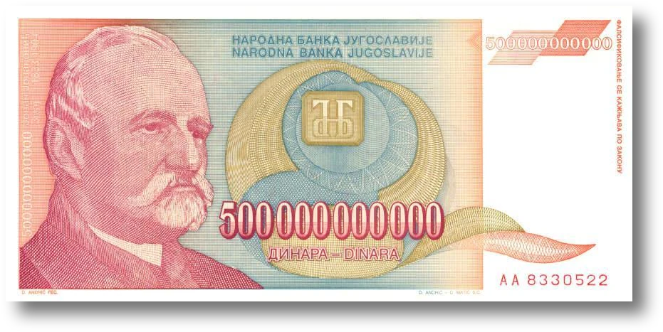

Le fil rouge des chapitres 43 à 48
Cinq chapitres, une seule histoire : comment l'économie évolue, et comment la BNS et l'État la pilotent.
Monnaie
Quand les prix se dérèglent.
Croissance
La tendance à long terme.
🌊Ch. 46Conjoncture
Les vagues à court terme.
🎯Ch. 47Objectifs
Ce que l'État veut atteindre.
🧰Ch. 48Instruments
Comment la BNS et l'État agissent.
Ce chapitre : les déséquilibres de la monnaie. Ils apparaissent surtout aux extrêmes du cycle (ch. 46) : l'inflation en surchauffe, la déflation au creux. Revoir la synthèse complète (ch. 45)
La monnaie
La monnaie est un moyen d'échange économique. Elle a remplacé le troc, où il fallait trouver quelqu'un qui possède ce qu'on veut et qui veut ce qu'on possède.
Les pièces et les billets
Billets émis par la BNS, pièces frappées par Swissmint pour la Confédération.
L'argent inscrit sur les comptes
Créée surtout par les banques commerciales quand elles accordent des crédits. Utilisée par les cartes, les virements, TWINT.
Aujourd'hui, la plus grande partie de la monnaie en circulation est scripturale.
Les fonctions de la monnaie
On l'échange contre des biens et des services.
Elle mesure et compare la valeur de tout, dans une même unité : le franc.
On peut l'épargner pour l'utiliser plus tard.
En agissant sur la quantité de monnaie, la BNS influence l'économie.
Dans une économie qui va bien…
Le pouvoir d'achat reste constant.
On peut budgéter et planifier ses projets.
Pas d'incertitude sur leur avenir.
… mais il arrive que la machine se dérègle
L'inflation
Les prix augmentent
Pas un seul produit : le niveau général des prix.
La monnaie perd de sa valeur
Un franc achète moins qu'avant.
Le pouvoir d'achat baisse
Avec le même salaire, on achète moins.
Les degrés de l'inflation
| Inflation annuelle | On parle d'inflation… |
|---|---|
| jusqu'à 2 % | normale : c'est l'objectif de la BNS |
| de 2 à 5 % | rampante |
| de 5 à 10 % | déclarée |
| au-delà de 10 % | galopante |
| au-delà de 100 % | hyperinflation : la monnaie ne vaut presque plus rien |
L'hyperinflation : un record

(Yougoslavie, 1993)
d'inflation… en un seul mois. Les prix doublaient environ toutes les 34 heures.
- Les salaires sont dépensés le jour même
- On paie en devises étrangères (marks, dollars)
- On revient au troc
La monnaie ne remplit plus aucune de ses fonctions.
L'inflation en Suisse depuis 2000
Les causes de l'inflation
À la base : une rupture de l'équilibre entre l'offre et la demande.
Soit
La demande augmentePlus d'acheteurs pour les mêmes biens.
Et / ou
L'offre diminueMoins de biens pour les mêmes acheteurs.
L'inflation par la demande
Immigration
Plus de ménages, plus d'achats.
Optimisme
Confiance en l'avenir, hausse des dépenses.
Hausse des revenus
Hausse des achats.
Baisse des taux
Moins d'épargne, plus de crédits, plus d'achats.
Dépenses de l'État
L'État commande et achète davantage.
L'inflation par les coûts
Les charges de l'entreprise augmentent…
- 🚚 Transport
- ⚡ Électricité
- 🏢 Loyers
- 🧾 Impôts
- 🛢️ Matières premières
La spirale prix-salaires
L'inflation par l'offre de monnaie
émet de la monnaie (base monétaire).
a acheté massivement des euros pour maintenir le franc bas, ce qui crée des francs.
font « tourner la planche à billets » pour financer leurs dépenses.
L'inflation importée
2022 : le franc fort freine l'inflation importée
Pétrole et gaz importés coûtent moins cher en francs.
Surtout hydraulique et nucléaire, peu de gaz.
a relevé ses taux dès juin 2022.
Les conséquences de l'inflation
L'inflation ne touche pas tout le monde de la même façon.
Les ménages
Perte de pouvoir d'achat.
Les épargnants
Leur épargne perd de sa valeur.
Les exportateurs
Perte de compétitivité à l'étranger.
Les débiteurs
Leur dette perd de sa valeur.
Les importateurs
Les produits étrangers deviennent relativement moins chers.
Lutter contre l'inflation
Principe de base : diminuer la masse monétaire et freiner la demande. Comment ?
Politique monétaire · BNS
Hausse des taux d'intérêtMoins de crédits, plus d'épargne.
Politique fiscale · État
Hausse des impôts et taxesMoins de revenu disponible.
Politique budgétaire · État
Baisse des dépensesMoins de constructions, moins de commandes.
C'est une politique restrictive (austérité). Risque : moins de travail, donc plus de chômage.
La hausse des taux : l'effet domino
Une décision politique, très délicate à mettre en place : risque de pénuries et de marché noir. En Suisse, le Surveillant des prix peut empêcher des hausses abusives, surtout lorsqu'il n'y a pas de concurrence.
La BNS en action : le taux directeur
La déflation
Non ! Si les prix baissent, chacun attend qu'ils baissent encore avant d'acheter… et toute l'économie ralentit.
Les causes de la déflation
Une baisse de la demande, provoquée par :
Une baisse de la masse monétaire disponible
Une baisse de la confiance des ménages
La spirale de la déflation
Lutter contre la déflation
Principe de base : augmenter la masse monétaire et relancer la demande.
Politique monétaire · BNS
Baisse des taux d'intérêtPlus de crédits, moins d'épargne.
Politique fiscale · État
Baisse des impôts et taxesPlus de revenu disponible, plus de dépenses.
Politique budgétaire · État
Hausse des dépensesPlus de constructions, plus de travail, plus d'emplois.
C'est une politique de relance (interventionnisme).
En résumé
| Critère | Inflation | Déflation |
|---|---|---|
| Prix | Hausse : on parle de « surchauffe » | Baisse |
| Chômage | Bas | Élevé |
| Cause | Trop de monnaie, trop de demande | Manque de monnaie, manque de demande |
| Moyens de lutte | Hausse des taux, politique restrictive | Baisse des taux, politique de relance |
La stagflation
L'économie est au ralenti
- Prix stables ou en baisse
- Chômage élevé
L'économie est à plein régime
- Chômage bas
- Hausse des prix
Lutter contre la stagflation : un dilemme
Il faut choisir entre…
… et
Autrement dit : chaque remède aggrave l'autre problème.
L'IPC et le panier-type
Il sert à :
- Calculer l'inflation
- Indexer salaires, rentes et loyers
- Passer du nominal au réel
- Décider de la politique monétaire
- Indiquer l'état de l'économie
Le panier-type
L'OFS relève les prix d'un panier représentatif de la consommation des ménages. Chaque poste a un poids, révisé périodiquement.
Un panier qui évolue
Environ 40 % du panier en 1939
Un peu plus de 10 % aujourd'hui (boissons comprises).
Santé, loisirs, communication
Ces postes ont pris une place bien plus grande.
On retrouve la loi d'Engel du chapitre 11 : plus le revenu augmente, plus la part des besoins vitaux diminue.
Calculer l'inflation avec l'IPC
Dans l'exemple ci-dessus, on peut dire que l'IPC a augmenté de 2,6 points, portant l'inflation à 2,5 %.
Indexation et salaire réel
Adapter les salaires à l'IPC
Les salaires (ou rentes, loyers) suivent l'évolution des prix, pour maintenir le pouvoir d'achat.
Francs ou pouvoir d'achat
Le salaire nominal est le montant en francs. Le salaire réel tient compte de l'inflation : ce qu'on peut réellement acheter.
La progression à froid
L'impôt sur le revenu est progressif. Pour éviter cet effet, la Confédération et les cantons doivent adapter régulièrement leurs barèmes.
Avons-nous tout vu ?
Passez à l'entraînement : 48 questions, avec la correction après chaque réponse.